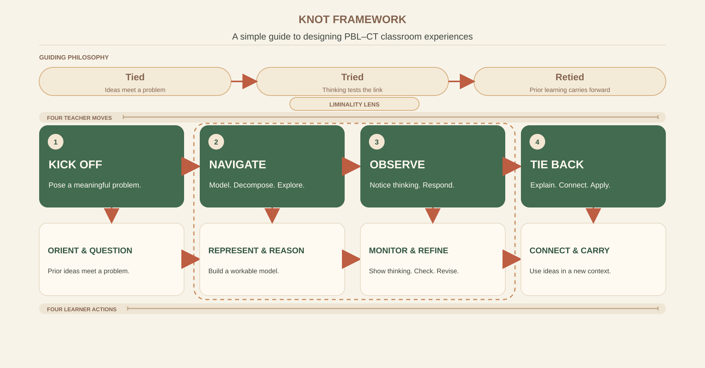

14.1 · The four KNOT moves
Four moves for a thoughtful class
The philosophy of Tied, Tried, Retied clarifies the movement: ideas meet a meaningful problem, are tested through thinking and evidence, and prior learning carries forward. The four moves connect teacher decisions with learner actions. They are flexible prompts, not fixed stages; teachers can adapt an activity in response to student thinking.

“A meaningful problem starts the learning. The real work is helping students make sense of it, notice what their thinking shows, and carry what they understand into what comes next.”
How the theories come together
KNOT is a synthesis of ideas that play different roles. Dewey helps explain learning through inquiry and reflection. Barrows describes the problem-based learning structure and the teacher's facilitation role. Wing explains the kind of problem-formulating and solution-building thinking CT brings. Meyer and Land offer a lens for interpreting liminal moments around threshold concepts. These are not four interchangeable theories, and none alone is KNOT.
| Grounding | What it contributes | Where it informs KNOT |
|---|---|---|
| John Dewey · reflective inquiry | A felt difficulty can prompt inquiry. Learners consider ideas, seek evidence, and reflect on what follows from their thinking. | Kick off gives inquiry a meaningful question. Tie back asks learners to examine what they found and carry it into further experience. |
| Howard Barrows · problem-based learning | PBL is not one fixed method. Its problem, learner activity, and tutor role can be designed in different ways. In KNOT, the problem gives a reason to learn and the teacher guides rather than simply supplies answers. | Kick off situates learning in a problem. Observe includes facilitation and support as learners investigate. |
| Jeannette Wing · computational thinking | CT concerns formulating problems and representing solutions so they can be carried out by an information-processing agent. It is broader than writing code. | Navigate makes problem formulation and reasoning practices visible, such as decomposition, abstraction, pattern recognition, algorithm design, and checking. |
| Meyer and Land · threshold concepts and liminality | Liminality describes a possible in-between state as a learner works with troublesome knowledge around a threshold concept. It draws attention to partial understanding and transitions. | Liminality is a lens across KNOT, especially when teachers Observe students' thinking and decide what support may help. It is not a fixed stage, and not every difficulty is evidence of a threshold concept. |
The theories give KNOT its intellectual grounding; the study gives the framework its evidence and practical emphasis. Student accounts of connecting topics, tracing and practising, understanding how algorithms developed, and explaining ideas to peers informed the focus on visible reasoning and responsive teaching. The theories explain why these design choices matter; the combined course evidence shows how they appeared in practice and how they supported knowledge construction.
A meaningful problem is only the beginning. The learning happens in the connections that follow.
I learned that a class is not KNOT simply because it includes a real-world example, a group task, or an algorithm. The important design work is to connect the problem to students' reasoning, make their changing ideas visible, respond with the support they need, and use evidence of their learning to decide what comes next.
The cycle matters more than any single activity. This is the practical meaning of Tied, Tried, Retied: ideas are connected, examined, and connected again as the learning moves forward.
The course materials helped make this insight visible. The cafe case begins with slow answers to repeated questions; the invitation task asks students to model a local route and its constraints; lab activities ask students to group familiar situations, settle shared expenses, write code, and compare proposed solutions. The survey adds students’ perspective: 120 of 124 respondents agreed or strongly agreed that the project helped them see how algorithms relate to real-world systems, and open responses describe applying graph theory to city-road planning. These sources support a practical emphasis on what students do with a problem and how teachers can see their reasoning, not simply whether a lesson contains a real-world story.
“The problem solving activities and case studies that actually needed me to use what I've learned instead of just mugging up or creating an answer out of thin air.”
“...now i have understood the reason behind it... I just thought it in terms of loops but i got to know the actual mathematical reason behind it.”
This is not a claim that KNOT is the first PBL–CT framework. A review of work published from 2017 to 2021 found few explicit frameworks for integrating PBL and CT, while newer studies have proposed related integrated approaches. KNOT is presented here as the evidence-informed synthesis developed through this study, with its particular emphasis on knowledge construction, liminality as a lens, and the teacher's use of learning evidence to shape what happens next. See the PBL–CT review and a recent computational-thinking framework.
Kick off with a meaningful problem
Give learners a question, situation, case, or challenge that makes the idea worth exploring. Connect it to what they know and invite them to notice what they need to find out.
Ask: What will make students curious enough to begin?
Navigate with thinking tools
Help learners work through the problem. They might break it into parts, find patterns, decide what matters, build a representation, develop a procedure, or compare possible approaches.
Ask: What thinking should students practise and make visible?
Observe learning and offer support
Listen to explanations and look at attempts while learning is happening. Offer examples, prompts, resources, dialogue, practice, and feedback where they can help students take a next step.
Ask: What are students showing, and what support would help now?
Tie understanding to what comes next
Invite learners to explain, check, revise, reflect, or apply an idea in a changed context. Use what they show to decide what should be revisited or opened up in the next class.
Ask: What can students now explain or do, and what question follows?
14.2 · A lesson plan that fits on one page
Plan the experience before choosing the activities
A KNOT lesson plan starts with what learners should understand and how they might show it. Then the teacher chooses a problem, thinking practices, support, and assessment that align. This short template can be used for one class, a lab, a project session, or a sequence of lessons.
KNOT lesson planning card
Before class, complete this sentence: By the end, students will be able to ___, and I will see evidence of it when they ___. If the learning intention and evidence do not match, adjust the task or assessment before teaching.
A KNOT reading of the Hungry Loop Cafe case
The original case asks students to help a cafe whose repeated searches through growing price records make answers slow. It asks them to propose how the data might be organized for frequent and range-based questions. The table below shows one way a teacher could plan this case through KNOT. The teacher prompts and evidence are a planning interpretation of the source case, not a claim that each step was delivered exactly this way in the study.
| KNOT move | Teacher move | Evidence to notice |
|---|---|---|
| Kick off | Present the cafe's question: what was the cheapest burger price between 9 AM and 5 PM, and why has the answer become slow? | Students identify the user question, the data involved, and what the current system is repeating. |
| Navigate | Ask pairs to list other frequent questions, sketch how the hourly records could be organized, and compare a repeated full scan with a prepared way to answer a range query. | Students make assumptions visible, identify useful operations, and explain how their representation supports those operations. |
| Observe | Use a small sample to trace each proposal. Ask what happens as the data grows and what becomes harder when prices are updated. Offer a counterexample or prompt where students need it. | Notice whether students can trace the method, reason about update and query costs, and revise an approach when its limits appear. |
| Tie back | Ask students to justify their choice, connect it to the relevant data-structure and efficiency concepts, and explain when another representation might be preferable. | Collect a short explanation or exit response showing what students can now justify, what remains uncertain, and what question should come next. |
14.3 · Assessment belongs throughout
Assessment is part of the learning, not only the last step
A KNOT class gathers evidence at several points. Assessment helps students see what is taking shape and helps the teacher make the next decision. It can be informal or formal, individual or collaborative, written, spoken, practical, or a combination, as long as it matches the learning intention.
For each assessment, decide three things: what evidence will show the learning, what criteria will make quality understandable, and what response the evidence will prompt from teacher or learner. A mark can summarize performance, but feedback and next steps make assessment useful for learning.
14.4 · What every KNOT class should make room for
Keep the essentials, adapt the activity
The specific task will vary by subject, age, time, and context. The recurring essentials are a clear purpose, active student thinking, support, evidence, and a way to connect learning forward.
14.5 · Use, reflect, and revisit
KNOT is a guide, not a recipe
Not every class needs a large project or a long investigation. A short classroom question, a worked example students critique, a lab task, or a project milestone can all follow the KNOT moves. The scale changes; the intention to make learning purposeful, visible, supported, and connected remains.
After the class, a teacher can reflect with four questions:
- What helped students enter the problem?
- What did their work reveal about their thinking?
- Where did they need support, and how did they use it?
- What should I revisit, extend, or connect next?
These questions return the teacher to the same cycle as the learners. Planning shapes the experience; student evidence reshapes the next plan. That is how KNOT's philosophy becomes a practical habit of teaching.